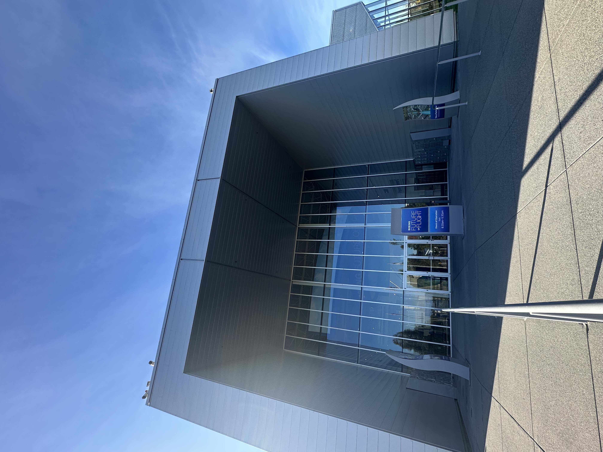

← Experience로 돌아가기
Boeing 시애틀 공장 견학
2025.10.22

Boeing 에버렛 공장을 직접 견학하며, 항공기 제작이
데이터와 절차 기반의 체계적인 시스템 위에서 이루어진다는 것을 현장에서 확인했습니다.
방문 공장: 에버렛 (Everett) 공장
767, 777, 777X 등 광동체기(wide-body)를 생산하는 공장을 직접 견학했습니다.
777X는 연비 효율을 높이기 위해 날개를 길게 설계했는데, 이로 인해 기존 공항의
유도로 규격에 맞지 않는 문제가 생겨 윙팁이 접히는 구조로 설계되었다는 점이
인상 깊었습니다.
참고: Boeing의 다른 생산 거점
견학을 준비하며 함께 조사한 내용으로, 직접 방문하지는 않았지만 배경지식으로
알게 된 부분입니다.
- 렌턴 공장 (737 전 기종) — Boeing의 주력 협동체기(narrow-body) 생산 거점
- 보잉 필드 (King County 국제공항) — 렌턴에서 생산된 기종의 인도, 도장,
테스트를 담당
- 사우스캐롤라이나 찰스턴 공장 — 787 드림라이너를 전량 생산 (과거 에버렛과
분산 생산했으나, 이후 찰스턴으로 완전히 통합됨)
(2026년 최신 소식) 에버렛에 신규 "노스 라인"이 가동을 시작하며, 1967년 이후
처음으로 737 생산이 렌턴 밖에서도 이루어지게 되었다는 소식을 접했습니다 —
항공기 생산 방식도 계속 진화하고 있다는 것을 느꼈습니다.
인상 깊었던 인사이트: 효율적인 작업 환경과 린 생산 방식
에버렛 공장에서 가장 인상 깊었던 점은 "궁극적인 안전은 효율적이고 작업자
중심적인 작업 환경에서 시작된다"는 사실이었습니다. 날개를 수직에 가깝게 세워
작업자의 동작과 피로도를 최소화하고, 린 생산 방식(Lean Production)을 적용해
불필요한 이동을 제거하는 과정을 직접 목격했습니다.
이러한 시스템은 단순한 효율 개선을 넘어, 정비사가 최상의 컨디션으로 정밀한
작업을 수행하게 하여 인적 오류(Human Error)를 줄이는 중요한 안전 대책이라는
점을 깨달았습니다.
현지 정비사와의 면담
견학만으로는 아쉬워, 지인을 통해 대한항공 항공우주사업본부 소속으로 시애틀에
주재 중이신 분의 연락처를 받아 직접 면담을 요청드렸습니다. 감사하게도 흔쾌히
받아주셔서, 당시 제작 중이던 777X 기종에 대한 이야기와 데이터 기반으로 운영되는
스마트 팩토리에 대한 현직자 관점의 이야기를 들을 수 있었습니다. 이 대화를 통해
항공 산업이 점차 데이터 기반의 스마트 정비 환경으로 변화하고 있다는 것을
실감했습니다.
이 경험은 이후 "안전한 운항은 현장 정비뿐만 아니라 이를 유기적으로 지원하는
운영 체계가 함께 작동할 때 완성된다"는 시각을 갖게 된 계기가 되었습니다.